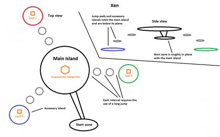
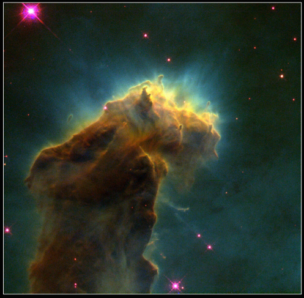

^ I concur. A driving sequence would be pretty nifty.
Although I’m technically against a driving sequence on Xen because it represents a huge departure from the previous game, the ATV does look pretty damn cool…it’s even colored like the HEV suit.
If implemented, the ATV should be weaponless or it will feel too much like the airboat and jaloppy in HL2. This also makes sense because the off-world Lambda Team is on an experimental mission rather than one of conquest.
And why no defense on such a vehicle?
They never know what they are up to, so I would give the vehicle some kind of countermeasures
Xen is going to be a tricky one for the team. Personally I felt that Xen was the weakest part of the original HL. It felt very much like a totally different game.
I really hope that the devs can give it an overhaul and improve on it a lot. As for a driving section, it would certainly be interesting to see, but shouldn’t exist purely as a gimmick.
Actually, with my Xen Chapter Layout, the ATV wouldn’t be a bad idea. You can place the ATV on the start zone and have Gordon drive to the primary island. The island could be made massive such that the ATV would be the only reasonable way to traverse it. The accessory islands could be traversable by foot.

think its funny people are saying that something like that should not have a weapon. I think it should maybe have a mounted glon gun(sp) that can fire a short burst before needing to cool down. the reason this would make sense, the team may be there to research but as we can see by the massive armory in the lab they are armed do to the hostile nature of xen.
things I would love to see on xen but know its unlikely do to the fact we have little say in it.
I would love to see a black mesa research post on xen likely the place the player would find a vehicle to transverse the area… I don’t think it should be a ground vehicle though as xen is cannon wise a bunch of floating rocks drifting around a gas gaint between dementions. think it should be some sort of small air craft armed with a light weapon for defense (m60 or glon gun… ok not a light weapon).
would love to see some living HEV science team members (armed and unarmed). how this could be made to fit. they could tell the player where the player needs to go. example player enters xen and wonders aroudn for a bit, you know you need to kill the thing but don’t know where it is after a bit you run into a research post that is still active and under attack. the player helps defend from the attack and the science team who are the last according to them tell you that the being you are searching for is at the top of some sort of factory, they then give you the vehicle and tell you which way to go.
any way on the vehicle, think it should be a small one man helicopter based aircraft instead of a atv. mainly because xen is just a bunch of floating rock. also because xen is the only area in the half life universe where it makes sense for the player to need one, both game play and mapping wise.
Some of your ideas are really really sweet. i love the first idea: the mechanism in the first island setting it into movement… causing it to travel to a larger xen-island. That would be epic. It always felt weird, suspicious and lazy designed to me, that there was a teleporter amidst that island.
i somehow like the idea with the research station too… but on the other hand it could take away some of the otherworldly wholesome strange and alien feel of xen, if there’s such a large familiar human-built structure. additionally there would be the upcoming question of how they managed to transport such massive amounts of materials to xen.
i’ve read your following post too; the idea with the ‘‘grunt-factory’’ is really sweet too; i always assumed the alien-grunts to be maybe metamorphosed/modified vortigaunts.
@the guy who proposed a driveable vehicle on xen: at first i didnt like the idea at all… but now i m not sure… the concept image of the vehicle looks nice… edit: the poster above me suggested a flying vehicle, maybe some kind of gyrocopter… which would be really much more reasonable than a ground vehicle due to xens environment… but somehow i’m not sure if i like this idea… i think not… given that anyone gives a shit about my opinion at all.
Edit: Please NO human survivors on xen… it would destroy the atmosphere of loneliness and isolation (similar like in super metroid). btw.: someone proposed camps, vehicles or even a whole research station on xen… but how did all this materials and things get teleported to xen? there seems to be only one teleporter in the lambda complex capable of teleporting to xen… and its portal doesnt look very big enough to let a vehicle or other bigger things through… had to bring the materials in tiny bits to xen… very time-consuming…
Xen is supposed to be Lovecraftian Horror, it shouldn’t make sense by science, it should be about going through the mystery, the unexplainable, about going through insanity while struggling with your own sanity (and failing), just create some totally crazy and so out of reality that it makes no sense can not be explained by human science. Do the abstract, don’t try to make sense of it, instead do the opposite make it an insane ride its supposed to be the part where Gordon Freeman feels isolated, question everything around, and tries to resolve the mystery that is insanity, total insanity. Its not science, its Lovecraftian Horror. Half-Life is Lovecraftian Horror.
Personally i liked the original Xen now that i see that they were intentionally doing it to give the immersion of a insane lovecraftian horror universe. Keep it that way, you have nothing to loose. Unless you go for the normal, boring, realistic, explainable way. Which is not how HL1 was supposed to be at all. So please don’t do that…
I would love to see a vehicle section. Reminds me kind of like the rovers the astronauts use on the moon, which I imagine is why the idea fits. A vehicle section would be great for spicing things up. Part of the reason the xen isn’t as good as the rest is because few, if any new gameplay mechanics are introduced.
Yes… i almost forgot about that… i get your point fully. but despite it should be kind of believable imo. a balance between believability and a total psychedelic, lovecraftion experience. (i’ve read some lovecraft stories too)
i wish xen to be as weird and psychedelic as it can be too… without getting too unbelievable and immersion-breaking… i mean, nobody knows what a strange dimension would or could actually look like… maybe extremely strange things actually exist…
i’ll never forget standing the first time on xen in the original half life… it was kind of horror, yes…
Unrealistic doesn’t mean immersion breaking, immersion has nothing to do with realism it has to do with setting the player in and making him feel that he is apart of the environment.
Personally i would not like realism, not only because its a strange unknown dimension, but also because it goes too far away from the idea of what it was supposed to be/be inspired by.
Vorts and headcrabs are seen together just before freezer room in Apprehension, and they don’t fight each other, so this would make no sense. I think Xen species divide to military and wildlife ones, and those sides should fight each other story-wise, but that would sometimes ruin gameplay.
Thank you!  I imagine the research station in my idea looking rather different from the main Black Mesa facility, so that while it reminds you of the BM scientists’ exploration of Xen, it doesn’t make you feel like you’re back in Black Mesa. The architecture would be very tight and claustrophobic compared to the BMRF, creating a space station sort of feel. Further, the chapter in question would be designed so that you often need to exit and reenter the research station (both through official exits and areas that breached during the Vortigaunt attack), reinforcing that this structure, the largest human structure in Xen, is a tiny, tiny speck in the endless world of Xen - this also allows for a full chapter to be set around the research station despite the research station itself not being large enough to contain a chapter.
I imagine the research station in my idea looking rather different from the main Black Mesa facility, so that while it reminds you of the BM scientists’ exploration of Xen, it doesn’t make you feel like you’re back in Black Mesa. The architecture would be very tight and claustrophobic compared to the BMRF, creating a space station sort of feel. Further, the chapter in question would be designed so that you often need to exit and reenter the research station (both through official exits and areas that breached during the Vortigaunt attack), reinforcing that this structure, the largest human structure in Xen, is a tiny, tiny speck in the endless world of Xen - this also allows for a full chapter to be set around the research station despite the research station itself not being large enough to contain a chapter.
exactly my thinking… It needs something with a wow factor before interloper does xen… This could be the ticket… It could be exciting if done well… Dodging the odd tentacle and manta ray shooting beams from above… Chased by packs of hound eyes… I don’t mind no weapons… Like get out if you want to shoot stuff like the air boat prior to upgrade turret.
Anyway as a bit of spice this is perhaps daring but deviating also just an idea really Orange ATV of course
The other issue with a drivable vehicle in Xen is that if for some reason it falls off the island, you’re fucked. Xen doesn’t and shouldn’t have something like highway safety rails. Perhaps some end game message like “assessment terminated: subject failed to use mission-critical assets” would work.
Also, I still think a weapon on the ATV is lame, as this is an exploratory mission. Most of the Xen chapter proper just has headcrabs, houndeyes and vorts as enemies…you can just run their asses over.
Finally, we need an HEV suit zombie! There is a human zombie in one of the sections before Interloper.
I not so keen on flying vehicles… Doing jumps and have to boost some propulsion device or thrusters on the back might work I could handle that idea but I don’t think a helicopter would be easily pilotable.
In a nutshell xen has new movement mechanics this needs to be exploited for new gameplay and a alternative to the long jump island hopping i.e somrthing faster would be interesting or weird… I suggested doing somthing with surf textures before… Some new mechainc in movement basically as lack of new enemies
I remember talking about this before HEV Suit Zombie… I thought the best place for it would be gonarchs lair… A scientisit half dead asks you to get water from a healing pool when you come back he is a HEV Zombie all done off screen and the healing water is a dupe so the spawn can take place out of sight.
HEV Zombies would be tough enemies like fast zombies although not to be overdone mind just one or 2 would make it great…
As far as the teleport to xen initially I think it needs something like this before arriving on xen
https://www.youtube.com/watch?v=6GtgxUBHLA0&feature=plcp
I have asked this guy If I can use his video… Make an overlay and put this or somthing similar before getting to xen.
I think a vortex would really work
Also I am really looking forward to the sky boxes on xen… I hope we can have 3d Sky with like nebula clouds with random light flashes in them to make it feel really nebula space like. Sky feeling alive if you like
Example

I always though a HEV zombie would sprint like the zombines do.
one thing that always bugged me in half life is that you are given a long jump module but you don’t see one on any of the bodies. by the way the hazard course is set up you would think there would be more.
I liek the idea of a vehicle but not a ATV mainly because of what xen is. a helicopter or flight powered vehicle would makes sense but though are not easy to control. unless it was a simple twin engine that was controlled by a joystick…
can’t find a good image for what I think a recon vehicle for the xen based science team would be, but I can describe, combine the ATV image above with this it woudl be small and easy to use… in truth think there should be land and air based vehicles on xen for the science team. but the player should be unable to drive them or at least most of them… it would be funny to see a atv on a rock in the middle on know where.
{kind=link}
I started thinking about music direction for xen and could not help but feel this part of the game would need to sound similar but yet different.
Certainly ambient and Spacey Dub Sounds would work.
Synth Heavy and plenty of reverb… Spongy appreggios and electric guitars…
A Band called Ozric Tentacles might be a good place to look towards for inspiration when I suggest that I don’t mean exactly like that but perhaps a good influence for geting the sound right for a space like environment.
couple of exampe tracks from Ozrics here
https://www.youtube.com/watch?v=0j1rIOwrC-0
https://www.youtube.com/watch?v=o_CmNNcbuA8
Note the airy flutes instuments will help create a good effect with the sky and low droning base tones.
It will have to depart from the industrial influence and come more to nature although an alien one but still keeping what it is that is Joels sound
Reggae bobbing rythems on the offbeat are always good for anti-gravity feel also
i wish they put a swirling vortex in the skybox so that the players can know what can kill them when they fall.
i like the idea of a ground vehicle, it could fit in some expanded part of Interloper, mhhh… a flying vehicle would make to easy go anywere. Maybe a vehicle that can make some jumps, with big wheels or something.
Hev zombies = good idea.